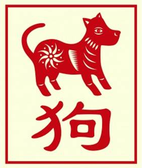

The Chinese Zodiac: Dog

- Fixed Season: Autumn
- Fixed Direction: West-Northwest
- Fixed Element: Earth/Yang
- Associated Sun Sign: Libra
The sign of the Dog emphasizes the importance of the self in those who are born under its sign. They are intelligent people who hold much of their thought process deep inside, and they are not always known for being able to share these thoughts freely with others. Part of this means that those born under the sign of the Dog live very rich inner lives, emphasizing the more personal aspects of basic human life. They get lost in thought often, appreciate the options that they encounter every single day, and can often entertain themselves for hours on end with puzzles and other brain teasers.
Part of the strong inner lifestyle of the Dog, however, is a relatively restrained outer lifestyle. More apt to live a serious and careful existence, a Dog is someone who will get the job done but rarely go beyond the scope of what it asked of them. This is because to them, there are more important things to do than spending their time trying to impress others, and they would rather enjoy what they choose to do than sacrifice their freedom for a little monetary gain. Thus, a Dog is a person in charge of their own path, who while they will encounter resistance from time to time will generally hold true to the morals and the lifestyle that seems best to them.